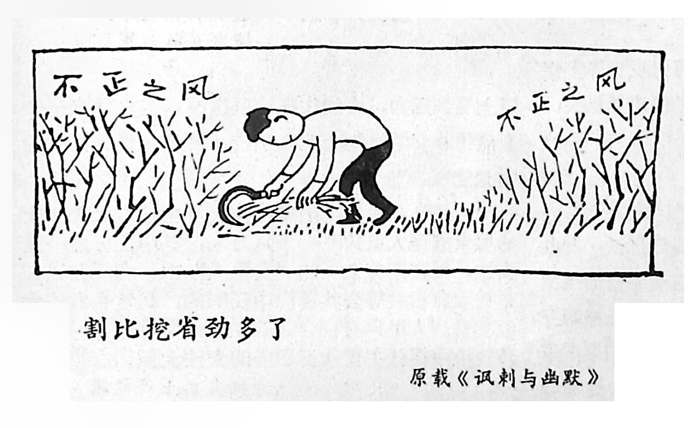

佚名 《人事》1986年第6期（总第9期），第45页（原载《讽刺与幽默》）
割比挖省劲多了
Cutting Is Much Easier Than Digging
- Text in the drawing
- 不正之风 (×2)
Unhealthy tendencies (×2) - Description
- A man scythes down weeds labeled 不正之风 (unhealthy tendencies) at ground level instead of pulling them out by the roots.
- Note
- 不正之风 was the standard 1980s term for corrupt practices in officialdom.
- Artist
- Unattributed 佚名
- Reprinted from
- 《讽刺与幽默》 — Fengci yu youmo (Satire and Humor)
- Published in
- 《人事》1986年第6期（总第9期）, p. 45
- Themes
- Reform and its implementation · Bureaucratism

Cite
Unattributed, “割比挖省劲多了” [Cutting Is Much Easier Than Digging], Renshi (Personnel) 《人事》, 1986, no. 6, p. 45.